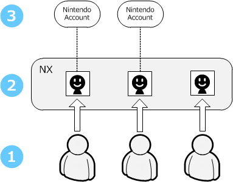

With the structure of the NX, a user registers to an NX system and then the registered user becomes linked to a Nintendo Account.

In this figure, (1) depicts the people who are using the NX system in the real world, (2) depicts the users registered to the system, and (3) depicts the Nintendo Accounts.
Save data and other resources on the NX system are managed at the user level for users registered to the system. Users can register and use the system even if they are not connected to the network. A Nintendo Account is required in order to use network features on the NX. As many as eight different people can register as users on each NX system, and each user can be linked to a Nintendo Account.
NX accounts are purposely structured to place no restrictions on the game design.
An account does not need to be selected when the NX system is started, so you can design your application to make the selection at any time. You can ask the player to select an account in the regular way when the application starts, or you can support any of the following mechanisms to suit the game design.
The NX system supports the simultaneous selection of multiple accounts. This means that scores can be recorded separately for each user when a number of people are playing together at the same time, like a sports game in doubles mode.
There are system features in the form of an applet which facilitates the implementation of processes in the application to switch accounts and register new users. For more information, see 5.3.1 Account Management Applet and the Account Guide.
CONFIDENTIAL